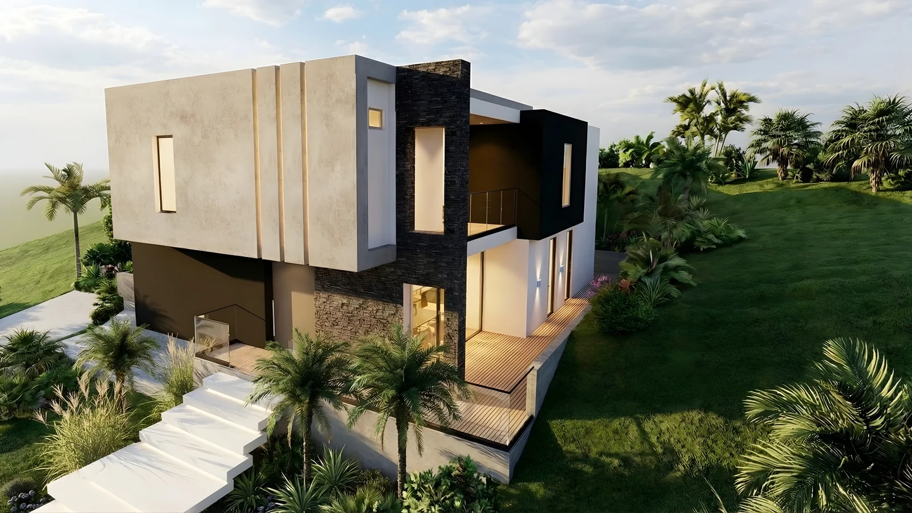

Levanto el proyecto en modelo antes de que exista en obra: los espesores, los apoyos y la luz que va a tener de verdad. De ahí salen las imágenes, los recorridos y los planos con que se coordina.
No llego al render desde la imagen: llego desde el modelo. Cuando levanto un proyecto en Revit, los espesores, las luces y los apoyos son los que se van a construir.
Kevin Stick Gil Arévalo. Estudiante de ingeniería civil en la Universidad Pontificia Bolivariana, seccional Bucaramanga, con nueve semestres culminados. En 2026 fundé VISUAL 3D STUDIO, un estudio de representación del diseño: modelos digitales coherentes con criterios constructivos y planos técnicos que sirven para coordinar la obra.
Subo a obra varias veces por semana. Esa distancia entre lo que se dibuja y lo que se levanta es la que corrijo antes de que llegue al concreto, y es lo que separa una imagen bonita de una imagen que se puede construir.
Este es el trabajo. Si quiere ver algo con más detalle, saber cómo se resolvió o simplemente saludar, aquí estoy.